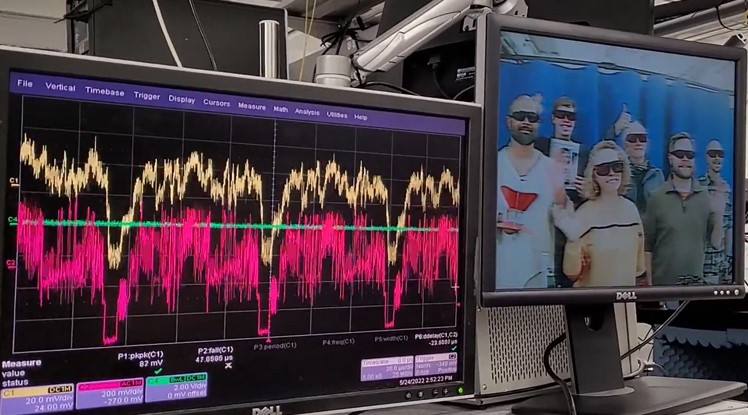

Araştırmacılar, Atomlar ve Mini Lazerler Kullanarak “Atomik Televizyon” Geliştirdiler
Bilim insanları, geleneksel 480i çözünürlük standardını karşılayan bir video sinyali taşımak için lazerleri ve atom bulutlarını kullanan bir 'atomik televizyon' geliştirdiler.
 Yeni teknolojinin anahtar noktası iki renkli lazer ışınının gaz halindeki rubidyum atomlarından oluşan bir cam kaba gönderilmesi. Zira bu hamle, atomları "Rydberg atomları" diye bilinen bir duruma sokuyor. Adını İsveçli spektroskopist J. R. Rydberg'ten alan durum, bir atomun enerjiyi emmesiyle ortaya çıkıyor. Böylece elektronları çekirdeğin etrafında daha geniş bir yörüngede dönmeye başlıyor. Bu durum atomları daha büyük ve daha gergin hale getirir ve aynı zamanda onları elektromanyetik alanlara duyarlı hale getirir. Böylece bir televizyon sinyali alıcısı olarak kullanılabilirler. Araştırmacılar daha önce radyo sinyalleriyle benzer bir çalışma yapmışlardı. Yeni deneyde lazer ışınları atomlardan geçerken analiz edildi ve video sinyalleri çıkarıldı. Daha sonra bu da ekran için uygun formata dönüştürüldü. ABD'deki Ulusal Standartlar ve Teknoloji Enstitüsü'nden (NIST) elektrik mühendisi Chris Holloway , "Rydberg atom sensörleri aracılığıyla nasıl video akışı yapılacağını ve alınacağını bulduk" diyor. "Temelde video oyununu bir sinyale kodladık ve onu atomlarla tespit ettik. Çıktı doğrudan TV'ye besleniyor." Atom bulutu önce bir radyo sinyali kullanılarak hazırlanır. Rydberg atomlarındaki enerji kaymaları üzerindeki etkisi ölçülür ve referans noktası olarak kullanılır. Daha sonra orijinal sinyali modüle etmek için bir video beslemesi eklenir ve bir korna anteni aracılığıyla iletilir . Bilim insanları, atomlardan geçerken lazer ışınlarından birini analiz ederek, video sinyalini çıkarır ve bir ekran için uygun bir formata dönüştürür. Kurulum daha önce bir video kameradan ve bir video oyun konsolundan gelen beslemeler kullanılarak test edildi. Sistemin başarılı olması için ekibin lazer ışınlarının boyutunu tam olarak alması gerekiyordu. Işın boyutu değiştikçe, lazer ışığının atomlarla etkileşmek için harcadığı ve ardından video akışının bant genişliğini etkileyen süre de değişir.
Araştırmacılar, yayınladıkları makalelerinde "Işın boyutu, atomların etkileşim hacminde kaldığı ortalama süreyi etkiler, bu da alıcının bant genişliğiyle ters orantılıdır" . Testlerden sonra ekip, tepki hızı ve renk yayınlayabilme açısından her iki lazer için 100 mikrometreden daha küçük ışın çaplarının en iyi nokta olduğunu buldu. Saniyede 100 megabite kadar etkileyici veri hızları elde edebildiler. Araştırmacılar, gelecekte bu oranların daha da iyileştirilebileceğini söylüyor. 480i'nin çözünürlüğü, günümüz standartlarına göre oldukça belirsiz görünüyor, ancak bu teknolojinin geliştirilmesiyle bu oran artırılabilir. Şu anda, atomik alıcı bir yemek masası büyüklüğünde, ancak gelecekte onu küçültmek mümkün olacak. Bu cihazlar, mevcut alıcılardan daha küçük ve çok yönlü olabilir ve gürültülü ortamlardan daha az kolay etkilenebilir. Dahası, aynı prensipler sonunda cam, atomlar ve standart fiber optik kablolar için de kullanılabilir. Lazerleri yeniden kalibre ederek, alıcılar ses ve video sinyallerini almak için kendilerini hızlı bir şekilde uyarlayabilecekler. Kaynak: https://www.sciencealert.com/using-jumbo-sized-atoms-and-tiny-lasers-researchers-have-created-atomic-television